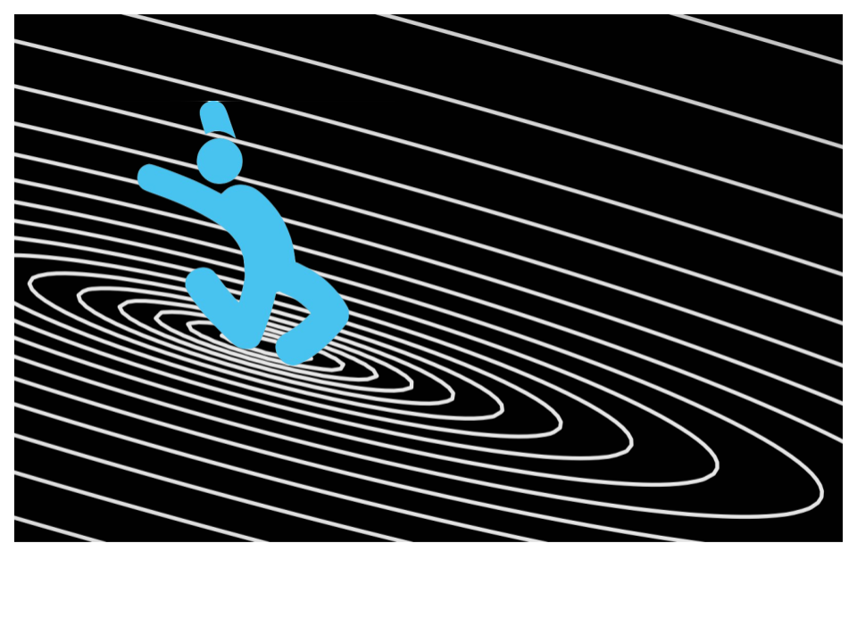
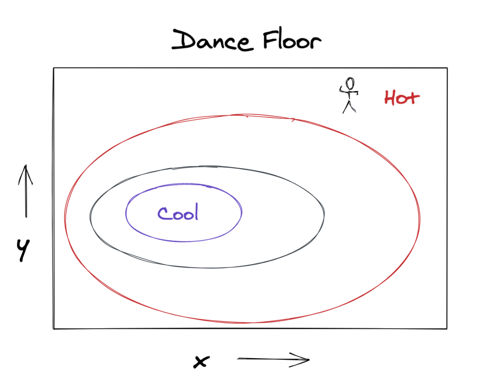
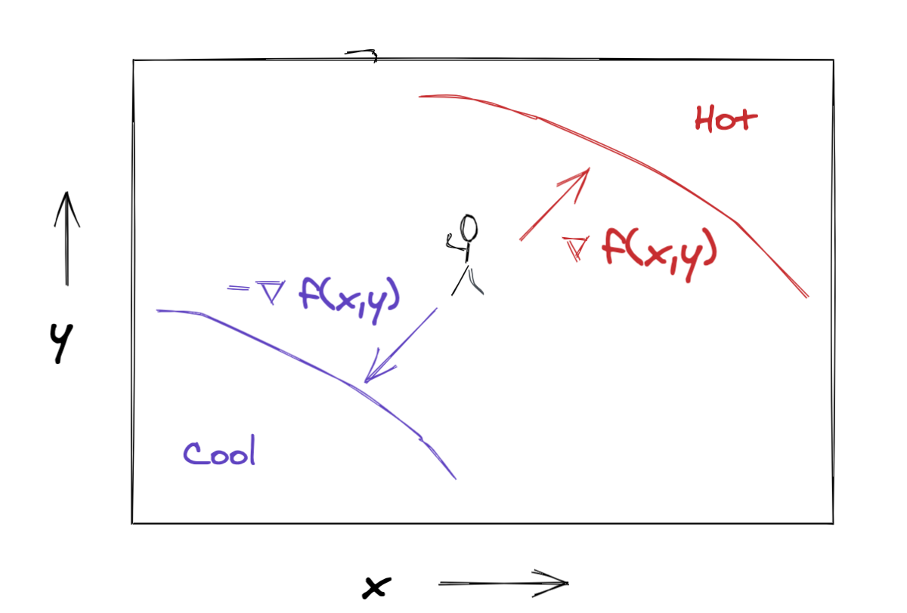
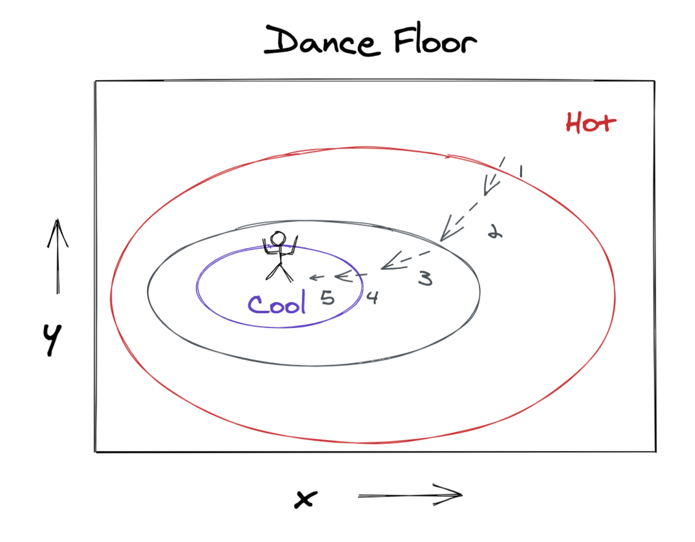
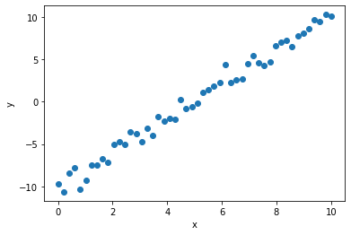
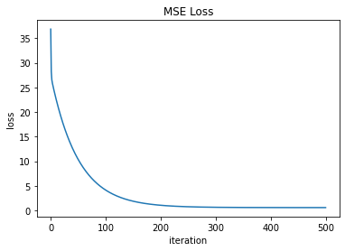
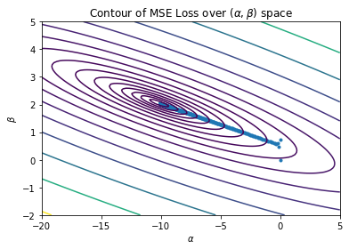
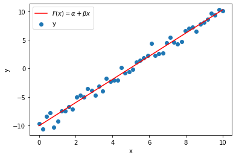

import numpy as np
alpha_true = -10
beta_true = 2
rng = np.random.default_rng(42)
x = np.linspace(0, 10, 50)
y = alpha_true + beta_true*x + rng.normal(0, 1, size=x.shape)Get Down with Gradient Descent
gradient boosting
Get down with the intuition for gradient descent via a fresh analogy, develop the mathematical formulation of the algorithm, and implement it from scratch to train a linear regression model.

Ahh, gradient descent. It’s probably one of the most ubiquitous algorithms used in data science, but you’re unlikely to see it being celebrated in the limelight of the Kaggle podium. Rather than taking center stage, gradient descent operates under the hood, powering the training for a wide range of models including deep neural networks, gradient boosting trees, generalized linear models, and mixed effects models. Getting an intuition for the algorithm will reveal how model fitting actually works and help us to see the common thread connecting a wide range of seemingly unrelated models. In this post we’ll get the intuition for gradient descent with a fresh analogy, develop the mathematical formulation, and ground our understanding by using it to train ourselves a linear regression model.
Intuition
Before we dive into the intuition for gradient descent itself, let’s get a high-level view of why it’s useful in training or fiting a model. Training a model basically means finding the model parameter values that make the model fit a given dataset well. We measure how well a model fits data using a special function variously called a loss or cost or objective function. A loss function takes the dataset and the model as arguments and returns a number that tells us how well our model fits the data. Therefore training is an optimization problem in which we search for the model parameter values that result in the minimum value of the loss function. Enter gradient descent.
Gradient descent is a numerical optimization technique that helps us find the inputs that yield the minimum value of a function. Since most explanations of the gradient descent algorithm seem to use a story about hikers being lost in some foggy mountains, we’re going to try out a new analogy.
Let’s say you’re at a concert. Remember those? They’re these things that used to happen where people played music and everyone danced and had a great time.
NOTE: Chiming in here in 2023 from a sort-of-post COVID 19 world, happily I can report that concerts and live music are back!
Now suppose at this concert there’s a dance floor which has become a bit sweltering from copious amounts of “getting down”. But the temperature isn’t quite uniform; maybe there’s a cool spot from a ceiling fan somewhere.

Let’s get ourselves to that cool spot using the following procedure.
- From our current location, figure out which direction feels coolest.
- Take a step (or simply shimmy) in that direction.
- Repeat steps 1 and 2 until we reach the coolest spot on the dance floor.
The crux of this procedure is figuring out, at each step, which direction yields the greatest temperature reduction. Our skin is pretty sensitive to temperature, so we can just use awareness of body sensation to sense which direction feels coolest. Luckily, we have a mathematical equivalent to our skin’s ability to sense local variation in temperature.
Determine which way to go
Let \(f(x,y)\) be the temperature on the dance floor at position \((x,y)\). The direction of fastest decrease in temperature is going to be given by some vector in our \((x,y)\) space, e.g.,
[vector component in \(x\) direction, vector component in \(y\) direction]
Turns out that the gradient of a function evaluated at a particular location yields a vector that points in the direction of fastest increase in the function, pretty similar to what we’re looking for. The gradient of \(f(x,y)\) is given by
\[ \nabla f(x,y) = \left [ \frac{\partial f(x,y)}{\partial x}, \frac{\partial f(x,y)}{\partial y} \right ] \]
The components of the gradient vector are the partial derivatives of our function \(f(x,y)\), evaluated at the point \((x,y)\). These partial derivatives just tell us the slope of \(f(x,y)\) in the \(x\) and \(y\) directions respectively. The intuition is that if \(\frac{\partial f(x,y)}{\partial x}\) is a large positive number, then moving in the positive \(x\) direction will make \(f(x,y)\) increase a lot, whereas if \(\frac{\partial f(x,y)}{\partial x}\) is a large negative number, then moving in the negative \(x\) direction will make \(f(x,y)\) increase a lot.
It’s not too hard to see that the direction of fastest decrease is actually just the exact opposite direction from that of fastest increase. Since we can point a vector in the opposite direction by negating its component values, our direction of fastest temperature decrease will be given by the negative gradient of the temperature field \(-\nabla f(x,y)\).

Take a step in the right direction
Now that we have our direction vector, we’re ready to take a step toward the cool part of the dance floor. To do this, we’ll just add our direction vector to our current position. The update rule would look like this.
\[ [x_\text{next}, y_\text{next}] = [x_\text{prev}, y_\text{prev}] - \nabla f (x_\text{prev}, y_\text{prev}) = [x_\text{prev}, y_\text{prev}] - \left [ \frac{\partial f (x_\text{prev}, y_\text{prev})}{\partial x}, \frac{\partial f (x_\text{prev}, y_\text{prev})}{\partial y} \right ] \]
If we iteratively apply this update rule, we’ll end up tracing a trajectory through the \((x,y)\) space on the dance floor and we’ll eventually end up at the coolest spot!

Great success!
General Formulation
Let’s generalize a bit to get to the form of gradient descent you’ll see in references like the wikipedia article.
First we modify our update equation above to handle functions with more than two arguments. We’ll use a bold \(\mathbf{x}\) to indicate a vector of inputs \(\mathbf{x} = [x_1,x_2,\dots,x_p]\). Our function \(f(\mathbf{x}): \mathbb{R}^p \mapsto \mathbb{R}\) maps a \(p\) dimensional input to a scalar output.
Second, instead of displacing our current location with the negative gradient vector itself, we’ll first rescale it with a learning rate parameter. This helps address any issues with units on inputs versus outputs. Imagine the input could range between 0 and 1, but the output ranged from 0 to 1,000. We would need to rescale the partial derivatives so the update step doesn’t send us way too far off in input space.
Finally, we’ll index our updates with \(t=0,1,\dots\). We’ll run for some prespecified number of iterations or we’ll stop the procedure once the change in \(f(\mathbf{x})\) is sufficiently small from one iteration to the next. Our update equation will look like this.
\[\mathbf{x}_{t+1} = \mathbf{x}_t - \eta \nabla f ( \mathbf{x}_t) \]
In pseudocode we could write it like this.
# gradient descent
x = initial_value_of_x
for t in range(n_iterations): # or some other convergence condition
x -= learning_rate * gradient_of_f(x)Now let’s see how this algorithm gets used to train models.
Training a Linear Regression Model with Gradient Descent
To get the intuition for how we use gradient descent to train models, let’s use it to train a linear regression model. Note that we wouldn’t actually use gradient descent to train a linear model in real life since there is an exact analytical solution for the best-fit parameter values.
Anyway, in the simple linear regression problem we have numerical feature \(x\) and numerical target \(y\), and we want to find a model of the form
\[F(x) = \alpha + \beta x\]
This model has two parameters, \(\alpha\) and \(\beta\). Here “training” means finding the parameter values that make \(F(x)\) fit our \(y\) data best. We measure how well, or really how poorly, our model fits the data by using a loss function that yields a small value when a model fits well. Ordinary least squares is so named because it uses mean squared error as its loss function.
\[L(y, F(x)) = \frac{1}{n} \sum_{i=1}^{n} (y_i - F(x_i))^2 = \frac{1}{n} \sum_{i=1}^{n} (y_i - (\alpha + \beta x_i))^2 \]
The loss function \(L\) takes four arguments: \(x\), \(y\), \(\alpha\), and \(\beta\). But since \(x\) and \(y\) are fixed given our dataset, we could write the loss as \(L(\alpha, \beta | x, y)\) to emphasize that \(\alpha\) and \(\beta\) are the only free parameters. So we’re looking for the following.
\[\underset{\alpha,\beta}{\operatorname{argmin}} ~ L(\alpha,\beta|x,y) \]
That’s right, we’re looking for the values of \(\alpha\) and \(\beta\) that minimize scalar-valued function \(L(\alpha, \beta)\). Sounds familiar huh?
To solve this minimization problem with gradient descent, we can use the following update rule.
\[[\alpha_{t+1}, \beta_{t+1}] = [\alpha_{t}, \beta_{t}] - \eta \nabla L(\alpha_t, \beta_t | x, y) \]
To get the gradient \(\nabla L(\alpha,\beta|x,y)\), we need the partial derivatives of \(L\) with respect to \(\alpha\) and \(\beta\). Since \(L\) is just a big sum, it’s easy to calculate the derivatives.
\[ \frac{\partial L(\alpha, \beta)}{\partial \alpha} = \frac{1}{n} \sum_{i=1}^{n} -2 (y_i - (\alpha + \beta x_i)) \] \[ \frac{\partial L(\alpha, \beta)}{\partial \beta} = \frac{1}{n} \sum_{i=1}^{n} -2x_i (y_i - (\alpha + \beta x_i)) \]
Great! We’ve got everything we need to implement gradient descent to train an ordinary least squares model. Everything except data that is.
Toy Data
Let’s make a friendly little linear dataset where \(\alpha=-10\) and \(\beta=2\), i.e.
\[ y = -10 + 2x + \text{noise}\]

Implementation
Our implementation will use a function to compute the gradient of the loss function. Since we have two parameters, we’ll use length-2 arrays to hold their values and their partial derivatives. At each iteration, we update the parameter values by subtracting the rescaled partial derivatives.
# linear regression using gradient descent
def gradient_of_loss(parameters, x, y):
alpha = parameters[0]
beta = parameters[1]
partial_alpha = np.mean(-2*(y - (alpha + beta*x)))
partial_beta = np.mean(-2*x*(y - (alpha + beta*x)))
return np.array([partial_alpha, partial_beta])
learning_rate = 0.02
parameters = np.array([0.0, 0.0]) # initial values of alpha and beta
for _ in range(500):
partial_derivatives = gradient_of_loss(parameters, x, y)
parameters -= learning_rate * partial_derivatives
parametersarray([-10.07049616, 2.03559051])We can see the loss function decreasing throughout the 500 iterations.

And we can visualize the loss function as a contour plot over \((\alpha,\beta)\) space. The blue points show the trajectory our gradient descent followed as it shimmied from the initial position to the coolest spot in \((\alpha, \beta)\) space where the loss function is nice and small.

Our gradient descent settles in a spot pretty close to \((-10, 2)\) in \((\alpha,\beta)\) space, which gives us the final fitted model below.

Wrapping Up
There you have it, gradient descent explained with a fresh new analogy having nothing whatsoever to do with foggy mountains, plus an implemented example fitting a linear model. While we often see gradient descent used to train models by performing an optimization in parameter space, as in generalized linear models and neural networks, there are other ways to use this powerful technique to train models. In particular, we’ll soon see how our beloved gradient boosting tree models use gradient descent in prediction space, rather than parameter space. Stay tuned for that mind bender in a future post.